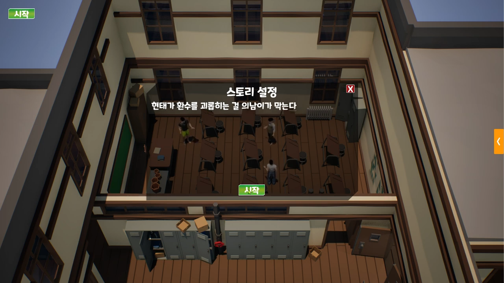
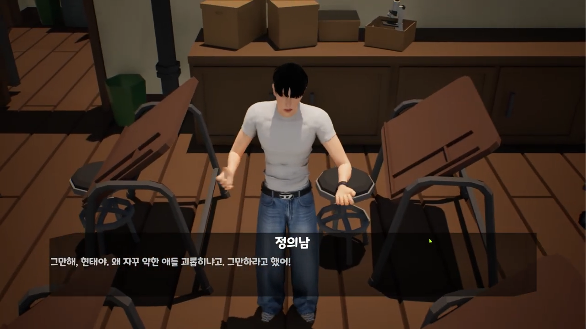
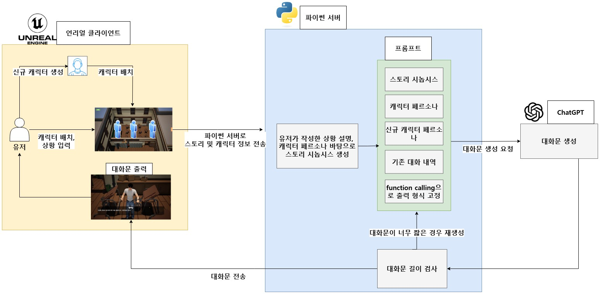
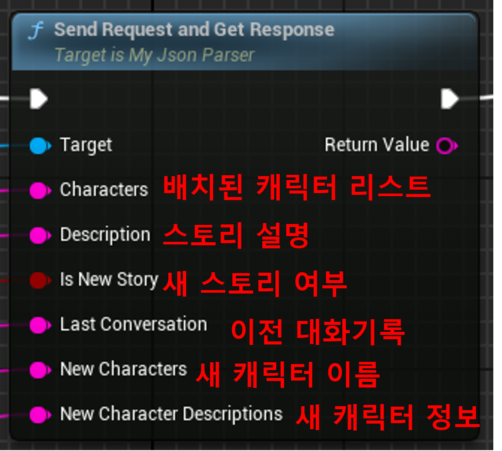
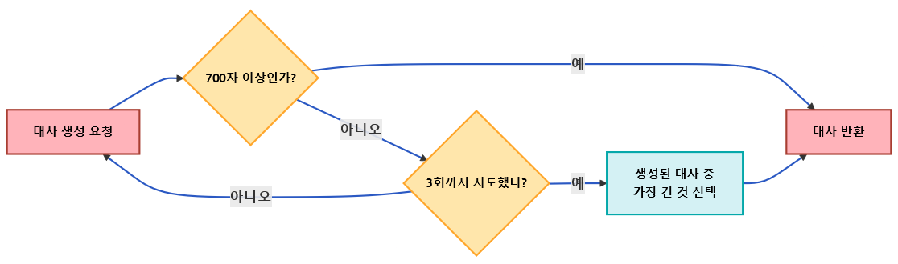
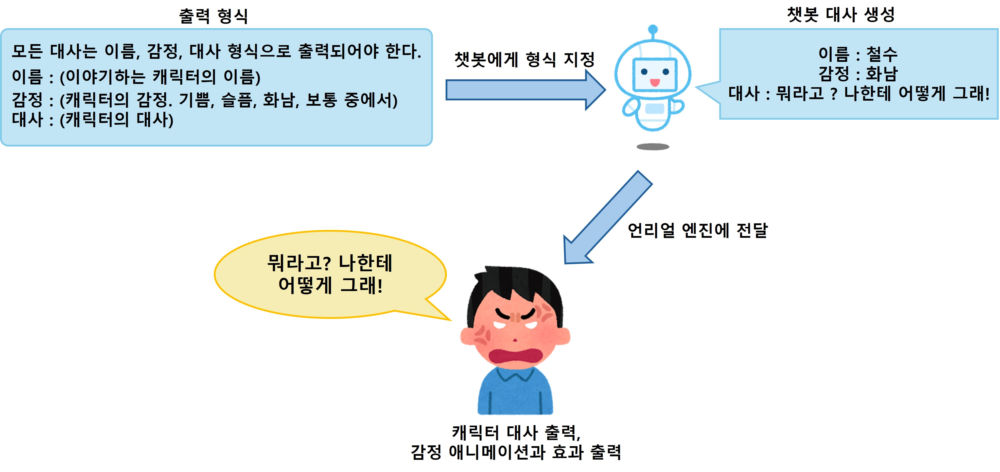
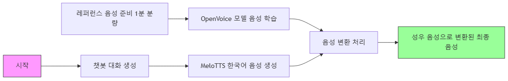

Unreal 5
Blueprint
C++
Python
GPT-4o
RAG
FastAPI
OpenVoice V2
MeloTTS
프로젝트 소개
사용자가 입력한 스토리대로 LLM이 캐릭터를 연기하여 장면을 만들어내는 콘텐츠 제작 툴입니다.
유튜브 채널 K-현실고증과 협업으로 개발했으며 사용자가 상황을 설정하면 LLM이 원작 캐릭터들의 정보를 바탕으로 원작 느낌을 살린 대본을 만들어냅니다.
개발 내용
- AI서버로 대본 생성 요청하는 Unreal Blueprint 커스텀 노드 구현
- AI서버에서 클라이언트의 요청을 받아 대본 작성 후 전달하는 기능을 구현
- 스토리 작성, 대본 작성 챗봇 구현
- 캐릭터 TTS 구현
언리얼-AI 아키텍처

언리얼-파이썬 인터페이스
대화문 생성에 필요한 데이터를 챗봇에 전달하는 함수입니다. 레벨에 배치된 캐릭터들의 정보, 유저가 입력한 스토리 설정 등의 정보가 전달됩니다.

입력 핀으로 전달받은 값을 json형식으로 새로 생성해 FastAPI 서버로 전송합니다.
대사 자동 재생성
문제점: 간헐적으로 대화문의 길이가 매우 짧게 생성되는 문제가 있었습니다.
해결법: 대화문의 최소 길이(700자)를 지정하고 해당 길이보다 짧게 생성되었을 경우 재생성을 최대 2회 요청하도록 하였습니다. 만약 최대 횟수까지 재생성을 해도 대화문 최소 길이를 충족하지 못할 경우, 생성된 대화문 중 가장 길이가 긴 대화문을 전달하도록 하였습니다.

챗봇 출력 정형화
챗봇으로부터 대사 뿐 아니라 대사를 말하는 캐릭터, 대사에 맞는 감정을 함께 출력시키고 출력 중 원하는 데이터들을 따로 처리해야 하기에 사전에 지정한 json 형식으로 출력되도록 하였습니다.

출력을 정형화하기 위해 OpenAI의 function calling 기능을 사용하여 출력 형식을 고정하였습니다. 해당 기능을 사용하여도 '감정' 부분의 출력이 정해진 감정 이외의 감정이 출력되는 문제가 있어 해당 경우 기본 감정으로 대체하도록 하였습니다.
캐릭터 TTS
각 캐릭터들에 맞는 음성을 생성합니다. 오픈소스 한국어 TTS인 MeloTTS와 오픈소스 음성 변환인 OpenVoice V2를 사용했습니다.

사전에 OpenVoice에 1분 가량의 레퍼런스 음성으로 음성을 학습시켰습니다. 챗봇이 대사를 생성하면 MeloTTS를 통해 한국어 음성을 생성했습니다. 그 후 각 캐릭터들에 할당된 목소리에 맞게 생성된 음성을 변환시킵니다.
회고
새롭게 캐릭터를 창작하는 것이 아닌 기존에 존재하는 콘텐츠 기반으로 챗봇을 구현해야 했기에 원작의 느낌을 살리는 것이 어려웠습니다. 캐릭터의 성격을 반영하고 원작의 느낌을 살리면서 스토리적인 재미도 챙기기 위해 노력했습니다.